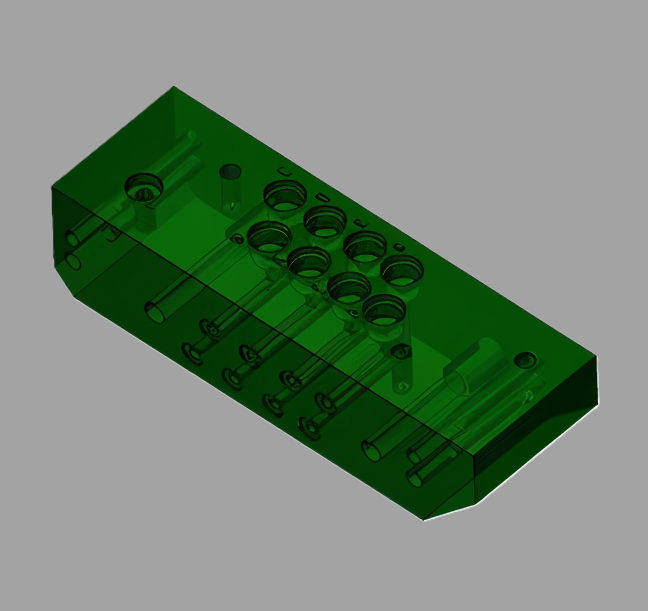

Our Services

Precision Machining
State-of-the-art CNC machining services for complex parts and components with tight tolerances. Our precision capabilities ensure exceptional accuracy, consistency, and high-quality results for every project.

Mastercam Software
We utilize industry-leading Mastercam software to program precise and efficient toolpaths for both CNC milling and lathe operations. This allows us to deliver high-quality, accurate parts with optimized machining performance for a variety of projects.
Quality Control
We implement rigorous inspection and quality assurance processes at every stage of production to ensure all parts meet exact specifications. Our commitment to precision and consistency guarantees reliable, high-quality results every time.